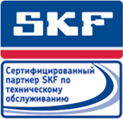

Основная информация
Компания ООО «ТД ИРБИС» – авторизованный дистрибьютор и сертифицированный партнер компании SKF – оказывает на предприятиях услуги по техническому обслуживанию в рамках программы CMP (Condition Monitoring Partner).
Работы, входящие в техническое обслуживание
- Сбор данных с помощью виброизмерительной, ультразвуковой и тепловизионной аппаратуры.
- Анализ технического состояния оборудования.
- Выверка приводных компонентов при помощи лазерного центровочного оборудования.
- Геометрические измерения при помощи лазерного центровочного оборудования.
- Балансировка роторов машин и оборудования в собственных опорах.
Также в перечень работ по тех. обслуживанию входит:
- Демонстрация возможностей устранения.
- Диагностика технического состояния машин и систем (контроль состояния подшипников, механических передач, электромагнитной системы, проточных частей) с применением спектрального анализа, методов огибающей виброускорения и регистрации высокой частоты.
- Описание характера повреждений с определением дефектов подшипников, механических передач, проточной части, электромагнитной системы. Разработка рекомендаций по замене комплектующих.